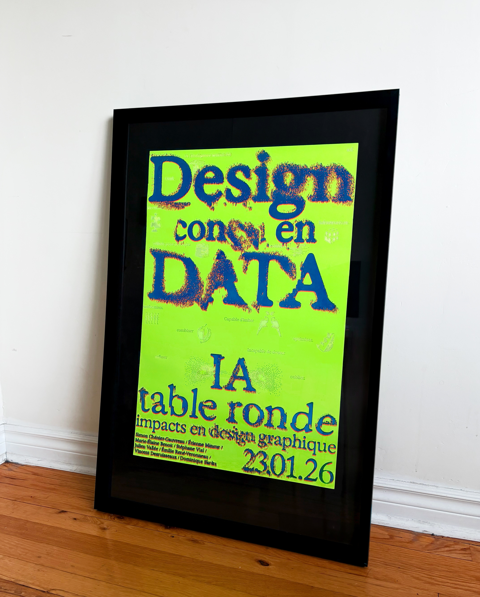
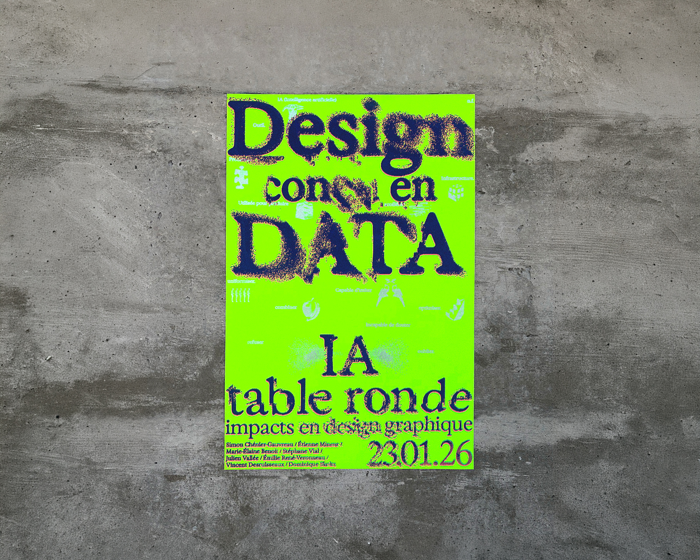
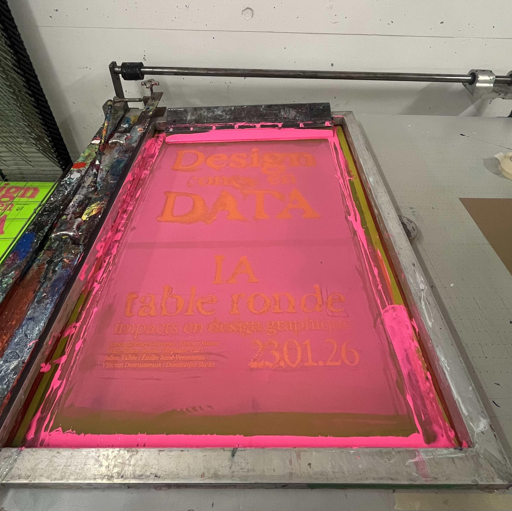
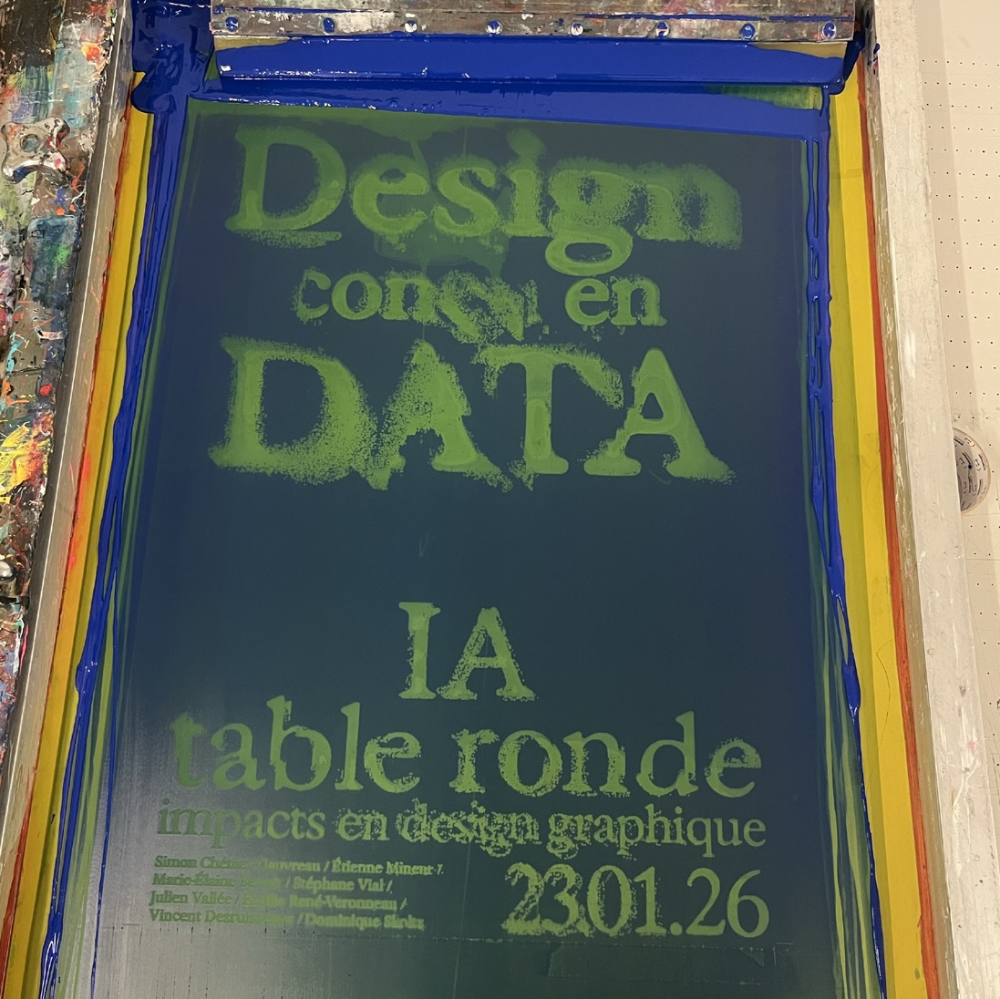

This visual identity explores denoising as a visual metaphor by putting a disrupted foreground layer into tension with a narrative background layer, constructed from AI prompts and generative iconography.
The AI prompts are intentionally made discrete in the background through the use of silver screenprinting ink to represent the novelty of AI and questions surrounding its usage in graphic design. The prompts were written by us to provoke reflection on what AI can and can't do in the field, so as to stoke fruitful discussions on its place in school and a practice.
Used across social media, presentations, animations, and screen-printed posters, the identity embodies hybridity by merging analog printing processes with emerging technologies, and thereby situating generative AI technologies within a larger canon of material production within graphic design.





Credits
Client: Sylvain Allard
UQAM School of Design
Brand identity:
Victor Percoco & Alicia Melançon
Motion design: Victor Percoco
Font: Exposure Var, 205TF